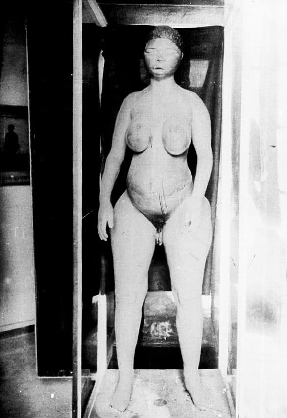
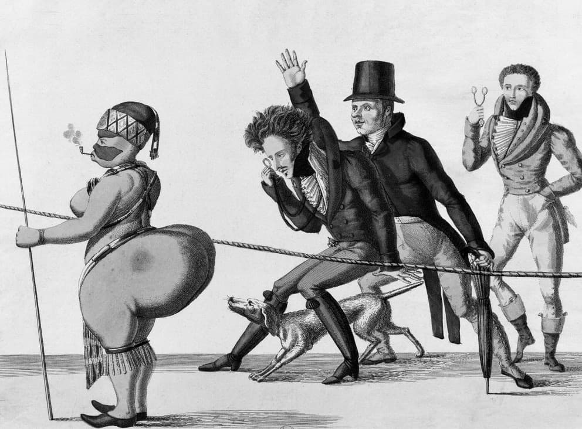

Alors qu’il visite les réserves du musée de l’Homme à Paris en 1988, le biologiste de l’évolution Stephen Jay Gould est confronté à une mise en scène macabre :
Sur l’étagère qui surplombait celle des cerveaux, je vis quelques-unes des pièces à conviction de l’histoire du racisme […] qui me procurèrent un frisson d’horreur : trois bocaux de petite taille contenant les organes sexuels disséqués de trois femmes du tiers-monde. L’un des trois bocaux portait une étiquette avec la mention « Vénus hottentote »Voir bibliographie..
Cette description nous ramène à un épisode de l’histoire de France, qui entremêle le destin d’une jeune femme d’Afrique du Sud appartenant au peuple dit hottentot, les Khoïkhoïs, et la théorisation du concept de race. Arrachée à son pays natal et exposée publiquement dans des spectacles de foire en Europe, Saartjie Baartman fascine alors par sa stéatopygie : une importante accumulation de tissus graisseux au niveau des fesses, particularité qui conduit les organisateurs de ces événements à la nommer ironiquement « la Vénus hottentote ». Ces spectacles dits ethniques, qui ont tout du freak show et durant lesquels Saartjie Baartman est souvent palpée moyennant finances, peuvent se voir comme une forme populaire et publique de l’intérêt des amateur·rice·s de sciences à l’époque pour les cabinets de curiosités, ces collections privées rassemblant raretés et tout ce qui était alors perçu comme monstrueux.
Arrivée à Paris, après cinq ans d’exhibition à Londres, Manchester et Amsterdam, la Vénus hottentote est observée sous toutes les coutures en mars 1815 par Georges Cuvier, Henri de Blainville et Étienne Geoffroy Saint-Hilaire, fondateurs de l’anatomie comparée et de la paléontologie et naturalistes au Muséum national d’histoire naturelle. Se tisse alors une collaboration entre entrepreneurs de spectacle et scientifiques qui se comprend comme un échange de bons procédés : les premiers fournissent aux seconds des spécimens d’étude, qui en retour valident non seulement la véracité mais aussi le caractère scientifique des exhibitions. Geoffroy Saint-Hilaire rédige ainsi pour l’impresario de Saartjie Baartman une description physique et atteste le caractère naturel de sa proéminence fessière.
De son vivant exhibé, examiné, caricaturé, prostitué, le corps de la Vénus hottentote ne trouve pas de répit après sa mort en décembre 1815, due à la boisson et à la maladie. Cuvier obtient que le corps soit livré à la science et transféré au Muséum national d’histoire naturelle : il en fait un moulage en plâtre qui sera reproduit et dont les copies peupleront maintes facultés de médecine et musées, emblèmes de la connaissance anthropologique occidentale de l’époque. Le naturaliste prélève et conserve ses parties génitales, les masses graisseuses de ses fesses et son cerveau. La Vénus est exposée dans la galerie d’anatomie comparée jusqu’en 1937, puis au musée de l’Homme jusqu’en 1974. Ce n’est qu’en 2002 que le squelette de Saartjie Baartman est autorisé, par un vote de l’Assemblée nationale, à quitter Paris pour le Cap. Elle est alors enterrée dans son village natal en présence du président sud-africain.
L’histoire de la Vénus hottentote n’est pas seulement celle d’une destinée individuelle tragique. Pendant sa vie, après sa mort et jusqu’à aujourd’hui, Saartjie Baartman se retrouve prise dans des enjeux plus larges qui font de son corps l’objet de théories et de controverses raciales.
Alors que l’étude de ses lèvres vaginales catalyse les débats anthropologiques qui cherchent à déterminer si les humains dérivent ou non d’un ancêtre commun, elle est aussi
présentée comme un chaînon intermédiaire entre le singe et l’humain. Ainsi Georges Cuvier compare-t-il son postérieur à ceux des femelles de singe mandrill et son visage à celui des orangs-outans. La morphologie singulière de Saartjie Baartman constituerait en outre, pour lui, une preuve de l’appétit sexuel primitif de la femme africaine. L’étude post-mortem nourrit une nouvelle polémique en 1867 sur la relation entre complexion du cerveau et intelligence, le biologiste Armand de Quatrefages soulignant à tort la rareté et la simplicité des plis cérébraux de la Vénus, pour mieux distinguer une prétendue race hottentote de celle de l’homme civilisé. Au travers de la description des caractéristiques physiques hors normes de Saartjie Baartman, les naturalistes du Muséum national d’histoire naturelle font de son corps un spécimen à l’origine de théories raciales.
Aujourd’hui encore, la Vénus hottentote fait l’objet de querelles historiographiques virulentes. Certain·e·s historien·ne·sClaude Blanckaert (dir.), La Vénus hottentote : entre Barnum et Muséum, Paris, Muséum national d’histoire naturelle, 2013. voient dans cet épisode la banale rationalisation d’un racisme populaire, perceptible notamment dans la littérature de voyage de l’époque. D’autres mettent en avant un changement de nature épistémologique à partir de la fin du XVIIIe siècle en Europe, qui objective et représente scientifiquement le concept de race. Pour ces historiensNicolas Bancel et al. (dir.), L’Invention de la race. Des représentations scientifiques aux exhibitions populaires, Paris, La Découverte, 2014., c’est de la pratique scientifique que ce concept naît, à partir de la formalisation de taxonomies inventées par Linné et Buffon. Cette nouvelle frénésie classificatrice des êtres vivants et inanimés n’épargne pas les humains, et conduit à séparer des groupes de femmes et d’hommes sur des critères physiques. Alors que les rues Cuvier et Geoffroy Saint-Hilaire délimitent aujourd’hui encore le Jardin des Plantes à Paris, des collectifs s’insurgent et militent pour faire retirer de l’espace public toute commémoration de ces naturalistes à l’origine du concept de race.
La séparation entre ce qui relève du social et ce qui dépend du scientifique, pour penser des catégorisations telles que la race, se révèle souvent arbitraire. L’analyse conjointe des sciences et des sociétés permet d’y voir plus clair. Alors que se multipliaient, au XIXe siècle, des représentations populaires d’autres peuples, « science et spectacle tentèrent d’apprivoiser, d’ordonner et de rendre visible cette variété », écrit l’historienne Emily S. Rosenberg. L’alliance entre science et spectacle se fit toutefois au détriment de toute représentativité : les individus sur lesquels s’est fondé un siècle de littérature scientifique, telle la Vénus hottentote, sont ceux qui avaient été identifiés comme dignes d’intérêt par des professionnels du divertissement. Les jugements scientifiques ne pouvaient alors qu’entériner et renforcer les critères d’authenticité du monde du spectacle, comme le note l’historien François-Xavier Fauvelle-Aymar qui conclut :
Le concept de race naît de cette opération circulaire, dans une formidable excroissance de spéculations anthropologiques sans rapport avec le nombre et la représentativité des individus concernésVoir bibliographie..
Il est regrettable que l’épisode historique de la Vénus hottentote ait laissé si peu de trace mémorielle, non seulement pour que le souvenir de Saartjie Baartman soit honoré dignement, mais aussi parce que son destin permet d’historiciser le racisme, en situant dans l’Europe du XIXe siècle l’émergence du concept de race. Au-delà de la peur de l’Autre, la légitimation d’une hiérarchie physique, mentale et morale entre différents groupes d’êtres humains ne constitue donc pas une expérience universelle – ni dans l’espace, ni dans le temps.
Thomas Tari
Bibliographie
BANCEL Nicolas, BLANCHARD Pascal, BOËTSCH Gilles et al. (dir.), Zoos humains. Au temps des exhibitions humaines, Paris, La Découverte, 2004.
BANCEL Nicolas, DAVID Thomas et THOMAS Dominic (dir.), L’Invention de la race. Des représentations scientifiques aux exhibitions populaires, Paris, La Découverte, 2014.
BLANCKAERT Claude (dir.), La Vénus hottentote : entre Barnum et Muséum, Paris, Muséum national d’histoire naturelle, 2013.
CUVIER Georges, « Extrait d’observations faites sur le cadavre d’une femme connue à Paris et à Londres sous le nom de Vénus hottentote », dans Mémoires du Muséum d’histoire naturelle, Paris, A. Belin, 1817.
FAUVELLE-AYMAR François-Xavier, « Les tribulations de la Vénus hottentote », L’Histoire, 273, 2003, p. 79.
GOULD Stephen Jay, Le Sourire du flamant rose. Réflexions sur l’histoire naturelle, Paris, Seuil, 1988.
ROSENBERG Emily S., A World Connecting : 1870-1945, Cambridge (Mass.), The Belknap Press of Harvard University Press, 2012.

Moulage du corps de la Vénus hottentote (1882), MNHN, Paris. Photo : Eugène Chéron, Bibliothèque nationale de France.

Caricature de la Vénus hottentote (1815). Gravure : Georges Loftus, Bibliothèque nationale de France.
Galerie d’anatomie comparée, École de médecine de Paris. Gravure : Édouard Antoine Renard, Paris Musées, Musée Carnavalet, CC0.